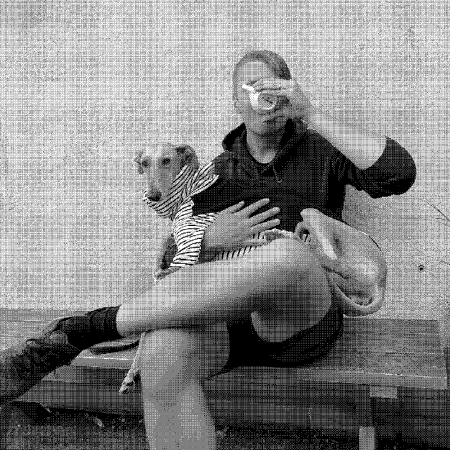

En rolig, lärorik, och möjligen rejält koffeinstinn upplevelse väntar! Ni kommer att guidas genom en kaffeprovning bestående av flera olika kaffen. Provningen är utformad för att ni ska lära er mer om kaffe; var det har odlats, vilka processer det genomgått, hur det rostats, samt hur dessa steg påverkar vad just ni föredrar. Mitt mål är att du ska lämna provningen med en utökad förståelse och uppskattning för den mörka bönsaften de flesta av oss dricker dagligen och att ni ska förstå vad ni tycker mest om.
Tidsåtgång: Ca 2 timmar
Kostnad: 500kr/person
Jag har många års erfarenhet av arbete inom kaffevärlden, både i Sverige och Australien. Allt från att vara barista till att renovera gammaldags espressomaskiner. Utanför kaffevärlden har jag en examen som ingenjör i Produktdesign och större delen av min karriär har spenderats inom data och artificiell intelligens.
Kaffeprovningen kan organiseras både på plats på ert kontor och via Zoom eller liknande beroende på var ni befinner er. För remote kaffeprovningar skickas kaffeproven till samtliga deltagare via post. Efter provningen kommer några av de kaffen ni provat finnas tillgängliga att köpa.
Kontakta mig gärna om ni har frågor eller vill boka en kaffeprovning!